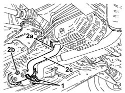
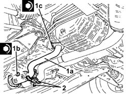

1076B84 RIGHT EXHAUST PIPE BETWEEN CARALYTIC PRECONVERTER AND CONVERTER R R
- Path
- Procedures > 10 ENGINE UNIT > 1076 EXHAUST PIPES AND SILENCERS > 1076B EXHAUST PIPES AND SILENCERS > 1076B84 RIGHT EXHAUST PIPE BETWEEN CARALYTIC PRECONVERTER AND CONVERTER R R
- Kind
- repair procedure (removal / refitting; the operation number is the code)
- Applies to
- engines: 3.2 V6; all production periods
- Interactive page
- https://sloeber94.github.io/elrnDB-aGt/en/#/125001111
Applies to: engines: 3.2 V6; all production periods
 Removing
Removing
 Refitting
RefittingPosition the vehicle on the ramp
Proceed with removal
Op. 7055B54 UNDER-ENGINE GUARD - R R
1. Undo the bolt and remove the bracket joining the exhaust pipes between the preconverters and the catalytic converter.
2. Undo the nuts (2a) and (2b), then remove the right exhaust pipe between the preconverter and the catalytic converter (2c).
Remove the gaskets.

Applies to: engines: 3.2 V6; all production periods
Refitting
Removing1. Place the right exhaust pipe between the preconverter and the catalytic converter (1a), complete with gaskets, back in its housing, then tighten the nuts (1b) and (1c) to the recommended torque.
 | Fastening | Component | Ø | Value (daNm) |
|---|---|---|---|---|
1b | Nut | RIGHT PRECONVERTER.CONVERTER PIPE/ | M8 | (Catalytic converter side) 2.3 ÷ 2.8 |
| Fastening | Component | Ø | Value (daNm) |
|---|---|---|---|---|
1c | Nut | RIGHT PRECONVERTER.CONVERTER PIPE/ | M8 | (Catalyitic preconverter side) 2.3 ÷ 2.8 |
2. Place the bracket joining the exhaust pipes between the preconverters and the catalytic converter back in its housing and secure it using the bolt.

Applies to: engines: 3.2 V6; all production periods
Proceed with refitting
Op. 7055B54 UNDER-ENGINE GUARD - R R.
Remove the car from the ramps.
Topics linked from this page (1)
Topics that link to this page (14)
- 1016D24 RIGHT CYLINDER HEAD - R.R. AND GASKET REPLACING
- 1076A72 HEAT SHIELD FOR RIGHT CATALYTIC PRECONVERTER R R
- 1080B39 RIGHT CATALYTIC PRECONVERTER R R OR REPLACE CYLINDER HEAD GASKET
- 1084B34 CARTRIDGE ENGINE OIL FILTER SUPPORT - R + R
- 2125C70 GEARBOX/BRAKE LEVER MOUNT - R R
- 2710A35 INTERMEDIATE DRIVE SHAFT MOUNT - R R
- 3340B56 RIGID PIPE FROM HYDRAULIC CONTROL UNIT TO RIGHT FRONT BRAKE - R.R.
- 4130A10 POWER STEERING BOX - R+R - CHECK TOW-IN IF NECESSARY SEPARATELY - INCLUDES BLEEDING
- 4130B36 SUPPLY PIPE FROM FLUID RESEVIOR TO POWER STEERING PUMP INLET PIPE R R
- 4130B40 OUTLET PIPE FROM PUMP TO POWER STEERING CASE R R
- 4410c10 FRONT SUSPENSION STABILIZER BAR - R+R - CHECK WHEEL GEOMETRY SEPARATELY
- 4410D13 FRONT SUSPENSION BEAM - R R
- 4410D15 FRONT SUSPENSION BEAM COMPLETE WITH WISHBONES AND STABILISER BAR R R
- 5530A10 ALTERNATOR - R+R